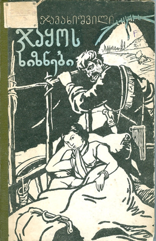

ჯაყოს ხიზნები
ინფორმაცია წიგნზე
ავტორი: მიხეილ ჯავახიშვილი
ჟანრი: რომანი, კლასიკა
გამოშვების თარიღი: 1924 წელი
აღწერა:
რომანში, რომელსაც მწერალმა 20 წელი მოანდომა, XX საუკუნის დასაწყისის საქართველოს სოციალური პრობლემებია წარმოჩენილი. რომანი ავტორის ერთ-ერთ ყველაზე მნიშვნელოვან ნაწარმოებად არის მიჩნეული.
მიხეილ ჯავახიშვილი აღნიშნავდა: „ჯაყოს ხიზნები 1924 წელს ზაფხულის დასასრულსა და შემოდგომის დასაწყისში დავწერე“. 1928 წელს ის დავით კასრაძესთან საუბარში აღნიშნავდა:„კვაჭი კვაჭანტირაძეს მივაყოლე ჯაყოს ხიზნები, ეს ქურთა–თამარაშენში ყოფნის სახსოვარია. მართალია, რომანმა აუარებელი მკითხველი გამიჩინა, მაგრამ აუარება დამაწყევარიც! კრიტიკაში ბევრი მაქებდა გულახდილობისათვის, ბევრი მაძაგებდა. ზოგიერთებმა ისიც კი მითხრეს, თუ გინდა, რომ ძველებურად მიგიღოთ და გულთბილად მოგეპყრათ, შენი შემოქმედებიდან ჯაყო ამოშალეო. ჯერ ერთი, რუსების თქმისა არ იყოს: კალმით დაწერილს ნაჯახით ვერ ამოშლი, და მეორეც, საკითხი მართლაც ასე რომ იყოს დაყენებული, მაშინ მე ყველაფერს დავთმობ, მაგრამ ჯაყოს და „თეთრ საყელოს“ ვერავინ გამამეტებინებს.“
მიხეილ ჯავახიშვილი ( სხვა გვარი: ადამაშვილი, ადამაშვილი) (დ. 8 ნოემბერი, 1880 – გ. 30 სექტემბერი, 1937) იყო ქართველი მწერალი, რომელიც ითვლება მეოცე საუკუნის ერთ-ერთ საუკეთესო ქართველ მწერალად. მისი პირველი მოთხრობა გამოჩნდა 1903 წელს, მაგრამ შემდეგ მწერალი გრძელვადიან პაუზაში ჩავარდა, სანამ წერას დაუბრუნდა 1920-იანი წლების დასაწყისში. საბჭოთა იდეოლოგიური ზეწოლისადმი მისმა წინააღმდეგობამ მას სიცოცხლე დაუჯდა: ის სიკვდილით დასაჯეს იოსებ სტალინის დიდი წმენდის დროს და მისი ნაწერები აკრძალული იყო თითქმის ოცი წლით. რუსული და ქართული ლიტერატურის თანამედროვე ბრიტანელი მკვლევარის, დონალდ რეიფილდის სიტყვებით, „მისი ნათელი მოთხრობა, პირდაპირ მედიაში, მისი მხიარული იუმორი, დახვეწილი ირონია და ზნეობრივი გამბედაობა იმსახურებს შედარებას სტენდალის, გი დე მოპასანის ისტორიებთან. და ემილ ზოლა თანამედროვე ქართულ პროზაში მხოლოდ კონსტანტინე გამსახურდიას შეეძლო მიისწრაფვოდა იმავე საერთაშორისო დონეზე“.
ავტორის ხელმოწერა: